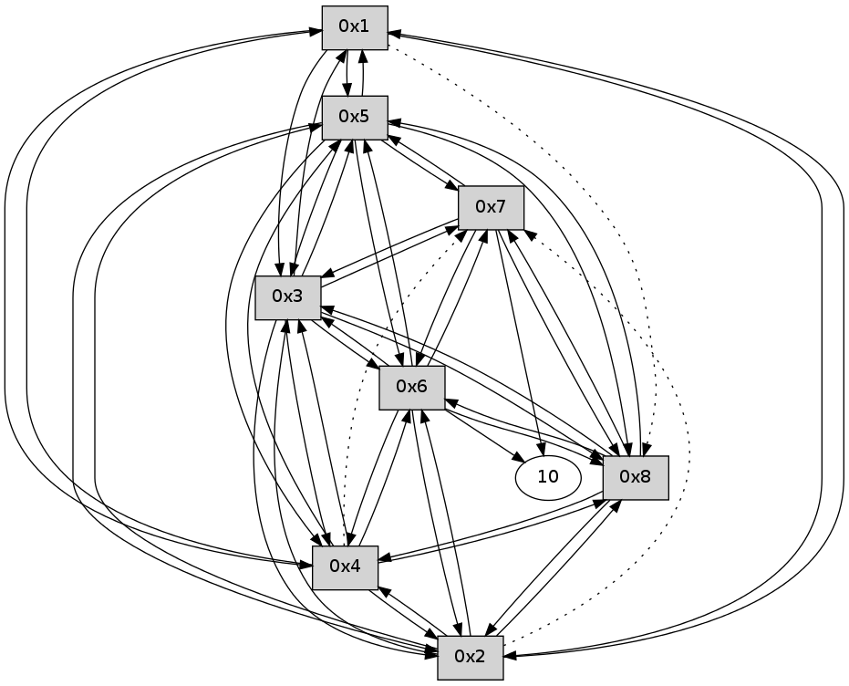

>> << IDX [start] -100 -25 -5 +0 +5 +25 +100 [135.018610001]
 Previous packets
----------------------------------------------------------------------
130.164911 beacon01(11f6) #0 coord=01,02,03,04,05,06,07,08,0a,09 cycle=688.0ms assoc
-- color-indic=0 64 17 81
130.175058 beacon02(11f6) #0 coord=01,02,03,04,05,06,07,08,0a,09 cycle=688.0ms assoc 64 84 b0
130.185046 beacon03(11f6) #0 coord=01,02,03,04,05,06,07,08,0a,09 cycle=688.0ms assoc 64 fe fd
130.195046 beacon04(11f6) #0 coord=01,02,03,04,05,06,07,08,0a,09 cycle=688.0ms assoc 64 89 17
130.205046 beacon05(11f6) #0 coord=01,02,03,04,05,06,07,08,0a,09 cycle=688.0ms assoc 64 f3 5a
130.215048 beacon06(11f6) #0 coord=01,02,03,04,05,06,07,08,0a,09 cycle=688.0ms assoc 64 7d 8d
130.225048 beacon07(11f6) #0 coord=01,02,03,04,05,06,07,08,0a,09 cycle=688.0ms assoc 64 07 c0
130.235052 beacon08(11f6) #0 coord=01,02,03,04,05,06,07,08,0a,09 cycle=688.0ms assoc 64 82 51
130.385022 [Hello(1): seq=30 sym=5,3,2,4 asym=8 sysInfo= stat=5:11,0,0,0/3:13,0,0,0/2:10,0,0,0/4:11,0,0,0/8:13,0,0,0]
----------------------------------------------------------------------
130.953047 beacon01(11f6) #0 coord=01,02,03,04,05,06,07,08,0a,09 cycle=688.0ms assoc
-- color-indic=0 64 d3 8f
130.963205 beacon02(11f6) #0 coord=01,02,03,04,05,06,07,08,0a,09 cycle=688.0ms assoc 64 40 be
130.973182 beacon03(11f6) #0 coord=01,02,03,04,05,06,07,08,0a,09 cycle=688.0ms assoc 64 3a f3
130.983182 beacon04(11f6) #0 coord=01,02,03,04,05,06,07,08,0a,09 cycle=688.0ms assoc 64 4d 19
130.993182 beacon05(11f6) #0 coord=01,02,03,04,05,06,07,08,0a,09 cycle=688.0ms assoc 64 37 54
131.003183 beacon06(11f6) #0 coord=01,02,03,04,05,06,07,08,0a,09 cycle=688.0ms assoc 64 b9 83
131.013183 beacon07(11f6) #0 coord=01,02,03,04,05,06,07,08,0a,09 cycle=688.0ms assoc 64 c3 ce
131.023187 beacon08(11f6) #0 coord=01,02,03,04,05,06,07,08,0a,09 cycle=688.0ms assoc 64 46 5f
131.103699 [Hello(8): seq=30 sym=2,7,5,6,3,4 sysInfo= stat=2:11,0,0,0/7:11,0,0,0/5:10,0,0,0/6:13,0,0,0/3:11,0,0,0/4:12,0,0,0]
131.118968 [Hello(7): seq=30 sym=10,5,6,8,3 sysInfo= stat=10:10,0,0,0/5:10,0,0,0/6:13,0,0,0/8:14,0,0,0/3:12,0,0,0]
131.122729 [Hello(2): seq=30 sym=1,5,3,8,4,6 asym=7 sysInfo= stat=1:13,0,0,0/5:11,0,0,0/3:13,0,0,0/8:14,0,0,0/4:11,0,0,0/6:10,0,0,0/7:11,0,0,0]
131.143684 [Hello(4): seq=30 sym=1,2,5,6,3,8 asym=7 sysInfo= stat=1:13,0,0,0/2:13,0,0,0/5:12,0,0,0/6:12,0,0,0/3:13,0,0,0/8:13,0,0,0/7:3,0,0,0]
131.163686 [Hello(5): seq=30 sym=1,2,7,6,3,8,4 sysInfo= stat=1:14,0,0,0/2:12,0,0,0/7:12,0,0,0/6:12,0,0,0/3:13,0,0,0/8:14,0,0,0/4:13,0,0,0]
131.172374 [Hello(6): seq=30 sym=10,7,5,3,8,4,2 sysInfo= stat=10:10,0,0,0/7:12,0,0,0/5:10,0,0,0/3:12,0,0,0/8:14,0,0,0/4:11,0,0,0/2:2,0,0,0]
131.197305 [Hello(3): seq=30 sym=1,2,7,5,6,8,4 sysInfo= stat=1:14,0,0,0/2:12,0,0,0/7:12,0,0,0/5:12,0,0,0/6:13,0,0,0/8:14,0,0,0/4:14,0,0,0]
----------------------------------------------------------------------
131.741183 beacon01(11f6) #0 coord=01,02,03,04,05,06,07,08,0a,09 cycle=688.0ms assoc
-- color-indic=0 64 6f 8a
131.751356 beacon02(11f6) #0 coord=01,02,03,04,05,06,07,08,0a,09 cycle=688.0ms assoc 64 fc bb
131.761318 beacon03(11f6) #0 coord=01,02,03,04,05,06,07,08,0a,09 cycle=688.0ms assoc 64 86 f6
131.771319 beacon04(11f6) #0 coord=01,02,03,04,05,06,07,08,0a,09 cycle=688.0ms assoc 64 f1 1c
131.781320 beacon05(11f6) #0 coord=01,02,03,04,05,06,07,08,0a,09 cycle=688.0ms assoc 64 8b 51
131.791319 beacon06(11f6) #0 coord=01,02,03,04,05,06,07,08,0a,09 cycle=688.0ms assoc 64 05 86
131.801320 beacon07(11f6) #0 coord=01,02,03,04,05,06,07,08,0a,09 cycle=688.0ms assoc 64 7f cb
131.811322 beacon08(11f6) #0 coord=01,02,03,04,05,06,07,08,0a,09 cycle=688.0ms assoc 64 fa 5a
131.968736 [Hello(1): seq=31 sym=5,3,2,4 asym=8 sysInfo= stat=5:12,0,0,0/3:14,0,0,0/2:11,0,0,0/4:12,0,0,0/8:14,0,0,0]
----------------------------------------------------------------------
132.529321 beacon01(11f6) #0 coord=01,02,03,04,05,06,07,08,0a,09 cycle=688.0ms assoc
-- color-indic=0 64 7b e4
132.539486 beacon02(11f6) #0 coord=01,02,03,04,05,06,07,08,0a,09 cycle=688.0ms assoc 64 e8 d5
132.549456 beacon03(11f6) #0 coord=01,02,03,04,05,06,07,08,0a,09 cycle=688.0ms assoc 64 92 98
132.559456 beacon04(11f6) #0 coord=01,02,03,04,05,06,07,08,0a,09 cycle=688.0ms assoc 64 e5 72
132.569457 beacon05(11f6) #0 coord=01,02,03,04,05,06,07,08,0a,09 cycle=688.0ms assoc 64 9f 3f
132.579459 beacon06(11f6) #0 coord=01,02,03,04,05,06,07,08,0a,09 cycle=688.0ms assoc 64 11 e8
132.589457 beacon07(11f6) #0 coord=01,02,03,04,05,06,07,08,0a,09 cycle=688.0ms assoc 64 6b a5
132.599460 beacon08(11f6) #0 coord=01,02,03,04,05,06,07,08,0a,09 cycle=688.0ms assoc 64 ee 34
132.658939 [Hello(8): seq=31 sym=2,7,5,6,3,4 sysInfo= stat=2:12,0,0,0/7:12,0,0,0/5:11,0,0,0/6:14,0,0,0/3:12,0,0,0/4:13,0,0,0]
132.663482 [Hello(2): seq=31 sym=1,5,3,8,4,6 asym=7 sysInfo= stat=1:14,0,0,0/5:12,0,0,0/3:14,0,0,0/8:14,0,0,0/4:12,0,0,0/6:11,0,0,0/7:12,0,0,0]
132.670631 [Hello(7): seq=31 sym=10,5,6,8,3 sysInfo= stat=10:10,0,0,0/5:11,0,0,0/6:14,0,0,0/8:15,0,0,0/3:13,0,0,0]
132.673034 [Hello(6): seq=31 sym=10,7,5,3,8,4,2 sysInfo= stat=10:10,0,0,0/7:12,0,0,0/5:10,0,0,0/3:13,0,0,0/8:15,0,0,0/4:11,0,0,0/2:3,0,0,0]
132.685037 [Hello(4): seq=31 sym=1,2,5,6,3,8 asym=7 sysInfo= stat=1:14,0,0,0/2:14,0,0,0/5:13,0,0,0/6:14,0,0,0/3:14,0,0,0/8:14,0,0,0/7:4,0,0,0]
132.724043 [Hello(5): seq=31 sym=1,2,7,6,3,8,4 sysInfo= stat=1:15,0,0,0/2:13,0,0,0/7:13,0,0,0/6:14,0,0,0/3:14,0,0,0/8:15,0,0,0/4:14,0,0,0]
132.770000 [Hello(3): seq=31 sym=1,2,7,5,6,8,4 sysInfo= stat=1:15,0,0,0/2:13,0,0,0/7:13,0,0,0/5:13,0,0,0/6:14,0,0,0/8:15,0,0,0/4:15,0,0,0]
----------------------------------------------------------------------
133.317457 beacon01(11f6) #0 coord=01,02,03,04,05,06,07,08,0a,09 cycle=688.0ms assoc
-- color-indic=0 64 c7 e1
133.327612 beacon02(11f6) #0 coord=01,02,03,04,05,06,07,08,0a,09 cycle=688.0ms assoc 64 54 d0
133.337592 beacon03(11f6) #0 coord=01,02,03,04,05,06,07,08,0a,09 cycle=688.0ms assoc 64 2e 9d
133.347592 beacon04(11f6) #0 coord=01,02,03,04,05,06,07,08,0a,09 cycle=688.0ms assoc 64 59 77
133.357592 beacon05(11f6) #0 coord=01,02,03,04,05,06,07,08,0a,09 cycle=688.0ms assoc 64 23 3a
133.367592 beacon06(11f6) #0 coord=01,02,03,04,05,06,07,08,0a,09 cycle=688.0ms assoc 64 ad ed
133.377592 beacon07(11f6) #0 coord=01,02,03,04,05,06,07,08,0a,09 cycle=688.0ms assoc 64 d7 a0
133.387597 beacon08(11f6) #0 coord=01,02,03,04,05,06,07,08,0a,09 cycle=688.0ms assoc 64 52 31
133.559679 [Hello(1): seq=32 sym=5,3,2,4 asym=8 sysInfo= stat=5:13,0,0,0/3:15,0,0,0/2:12,0,0,0/4:13,0,0,0/8:15,0,0,0]
----------------------------------------------------------------------
134.105594 beacon01(11f6) #0 coord=01,02,03,04,05,06,07,08,0a,09 cycle=688.0ms assoc
-- color-indic=0 64 03 ef
134.115759 beacon02(11f6) #0 coord=01,02,03,04,05,06,07,08,0a,09 cycle=688.0ms assoc 64 90 de
134.125731 beacon03(11f6) #0 coord=01,02,03,04,05,06,07,08,0a,09 cycle=688.0ms assoc 64 ea 93
134.135729 beacon04(11f6) #0 coord=01,02,03,04,05,06,07,08,0a,09 cycle=688.0ms assoc 64 9d 79
134.145729 beacon05(11f6) #0 coord=01,02,03,04,05,06,07,08,0a,09 cycle=688.0ms assoc 64 e7 34
134.155730 beacon06(11f6) #0 coord=01,02,03,04,05,06,07,08,0a,09 cycle=688.0ms assoc 64 69 e3
134.165730 beacon07(11f6) #0 coord=01,02,03,04,05,06,07,08,0a,09 cycle=688.0ms assoc 64 13 ae
134.175736 beacon08(11f6) #0 coord=01,02,03,04,05,06,07,08,0a,09 cycle=688.0ms assoc 64 96 3f
134.260990 [Hello(4): seq=32 sym=1,2,5,6,3,8 asym=7 sysInfo= stat=1:15,0,0,0/2:14,0,0,0/5:14,0,0,0/6:14,0,0,0/3:15,0,0,0/8:14,0,0,0/7:4,0,0,0]
134.278982 [Hello(5): seq=32 sym=1,2,7,6,3,8,4 sysInfo= stat=1:0,0,0,0/2:13,0,0,0/7:13,0,0,0/6:14,0,0,0/3:15,0,0,0/8:15,0,0,0/4:15,0,0,0]
134.303939 [Hello(3): seq=32 sym=1,2,7,5,6,8,4 sysInfo= stat=1:0,0,0,0/2:13,0,0,0/7:13,0,0,0/5:14,0,0,0/6:14,0,0,0/8:15,0,0,0/4:0,0,0,0]
134.307333 [Hello(8): seq=32 sym=2,7,5,6,3,4 sym= sysInfo= stat=]
134.333963 [Hello(2): seq=32 sym=1,5,3,8,4,6 asym=7 sysInfo= stat=1:15,0,0,0/5:14,0,0,0/3:0,0,0,0/8:0,0,0,0/4:14,0,0,0/6:12,0,0,0/7:13,0,0,0]
134.352243 [Hello(6): seq=32 sym=10,7,5,3,8,4,2 sysInfo= stat=10:12,0,0,0/7:12,0,0,0/5:12,0,0,0/3:15,0,0,0/8:0,0,0,0/4:13,0,0,0/2:3,0,0,0]
----------------------------------------------------------------------
134.893730 beacon01(11f6) #0 coord=01,02,03,04,05,06,07,08,0a,09 cycle=688.0ms assoc
-- color-indic=0 64 bf ea
134.903897 beacon02(11f6) #0 coord=01,02,03,04,05,06,07,08,0a,09 cycle=688.0ms assoc 64 2c db
134.913865 beacon03(11f6) #0 coord=01,02,03,04,05,06,07,08,0a,09 cycle=688.0ms assoc 64 56 96
134.923864 beacon04(11f6) #0 coord=01,02,03,04,05,06,07,08,0a,09 cycle=688.0ms assoc 64 21 7c
134.933866 beacon05(11f6) #0 coord=01,02,03,04,05,06,07,08,0a,09 cycle=688.0ms assoc 64 5b 31
134.943866 beacon06(11f6) #0 coord=01,02,03,04,05,06,07,08,0a,09 cycle=688.0ms assoc 64 d5 e6
134.953865 beacon07(11f6) #0 coord=01,02,03,04,05,06,07,08,0a,09 cycle=688.0ms assoc 64 af ab
134.963959 beacon08(11f6) #0 coord=01,02,03,04,05,06,07,08,0a,09 cycle=688.0ms assoc 64 2a 3a